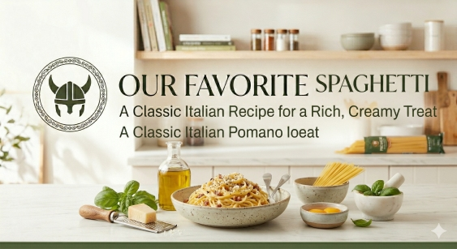

Spaghetti Carbonara

Home
Banana Bread
Caprese Salad
Spaghetti Carbonara
Classic Omlette
Homemade Guacamole
Autentic Roman Spaghetti Carbonara
Spaghetti alla Carbonara is a Roman pasta dish made with eggs, hard cheese, cured
pork, and black pepper. The trick to a perfect carbonara isn't adding cream—it's
the emulsification of the pasta water, eggs, and cheese to create a silky,
velvety sauce that coats every strand of pasta. It is high-concept comfort
food that comes together in less than 20 minutes.
Ingredients
- 100g guanciale (or pancetta/thick-cut bacon)
- 50g Pecorino Romano cheese, freshly grated
- 50g Parmesan cheese, freshly grated
- 3 large egg yolks and 1 whole egg
- 350g Spaghetti
- 2 cloves of garlic (optional, for flavoring the oil)
- Freshly cracked black pepper
- Bring a large pot of salted water to a boil and cook the spaghetti until al dente.
- While the pasta cooks, fry the guanciale in a large pan until the fat has rendered and the pork is crispy.
- In a small bowl, whisk the eggs and the grated cheeses together with a generous amount of black pepper until it forms a thick paste.
- Reserve half a cup of pasta water, then drain the spaghetti and add it to the pan with the guanciale. Remove the pan from the heat.
- Quickly pour the egg and cheese mixture over the pasta, adding a splash of the reserved water. Toss vigorously until the sauce becomes creamy (the residual heat cooks the eggs without scrambling them).